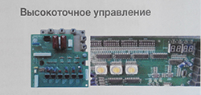
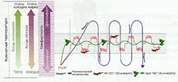

Инверторный или неинверторный? Как подобрать кондиционер
Понятно, что инверторный кондиционер отличается от неинверторного наличием этого самого инвертора, но в чём именно разница? Как наличие или отсутствие инвертора влияет на работу кондиционера?

Инвертор – это преобразователь. С помощью инвертора можно регулировать частоту работы компрессора, т.е., управлять мощностью работы прибора. Таким образом, разница между обычным и инверторным кондиционером в плавности работы. Обычный кондиционер имеет 2 режима: «включён» и «выключен» и работает с постоянной частотой вращения компрессора. А кондиционер, оснащённый инвертором, может работать в нескольких режимах мощности.

{kind=link}
Как это выглядит наглядно: обычный кондиционер включается на максимальную мощность, понижает температуру в помещении и выключается. Когда температура поднимается, он опять включается на полную мощность и понижает температуру. Инверторный кондиционер плавно включается на низких оборотах, и наращивает мощность медленно и только в случае необходимости. А в дальнейшем, установив необходимую температуру, кондиционер вновь сбрасывает обороты и поддерживает заданный микроклимат.
По сравнению с обычным кондиционером, инверторный более комфортный. Он более экономичен в потреблении электроэнергии, работает гораздо тише обычного, поддерживает заданный микроклимат, избегая резких скачков температуры, и работает при более низких температурах на обогрев помещения, кроме того, в инверторных кондиционерах зачастую встроены функции очистки воздуха, ионизаторы и прочее. Но он дороже, требует более частого сервисного обслуживания и чувствителен к перепадам напряжения. Чтобы инверторный кондиционер работал дольше и лучше, его рекомендуется чистить 2 раза в год, а чтобы уберечь от сгорания при перепадах напряжения рекомендуется подключать его к сети через стабилизатор.